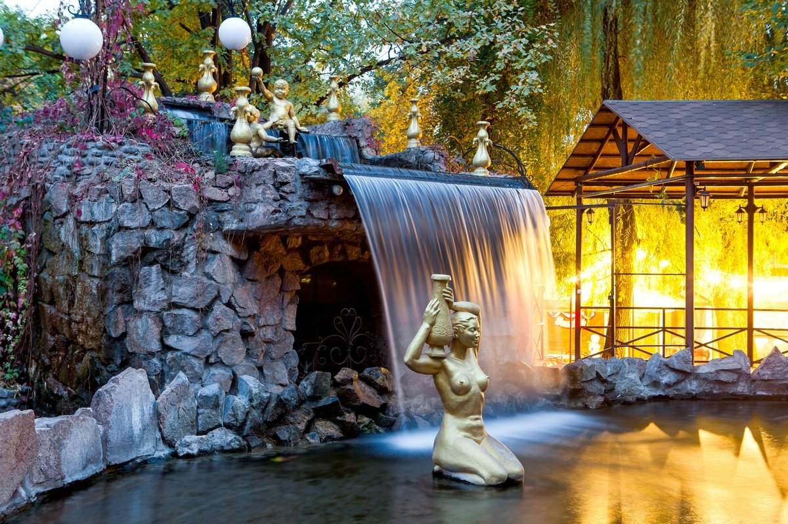

Кең баба саябағы
Саябақ қала орталығында орналасқан. Нысан он тоғызыншы ғасырдың аяғында құрылған. Кен-Баба саябағының жалпы аумағы 3,5 га құрайды. Парк ескі пионерлер саябағының орнында ашылды. Қазіргі уақытта бұл тұрғындардың сүйікті орындарының бірі.
Этнографиялық паркке кіре берісте жер шарын балалармен бірге ұстап тұрған тұғырға қолдар бейнеленген мүсін салынған, бұл татулық пен бірлікті білдіреді. Белсенді спортты сүйетіндер үшін командалық ойындарға арналған бірнеше спорт алаңдары, сонымен қатар теннис корты бар. Паркте балаларға арналған әртүрлі аттракциондар бар. Онда аққулар мен үйректер, субұрқақтар мен күңкілдеген Ақ-су сарқырамаларын көруге болады. Бұл этникалық саябақ болғандықтан, онда суретшілер мен ауыл шеберлерінің, қолөнершілердің галереясы орналасқан.
Жеті ұлттық мәдени орталықтың павильондары бөлек сайтта орналасқан: қазақ-өзбек, славян, татар-башқұрт, еуропалық, корей-ұйғыр және қытай. Саябақта «Миниатюрадағы Қазақстан», волейбол және баскетбол алаңы, шахмат клубы, шай, интернет кафе, «Оңтүстіктің сыйлықтары» жасыл қалашығы орналасқан.
Паркте ұлттық және еуропалық тағамдары бар көптеген дәмханалар бар. Жаңа кешенде шамамен 300 адам жұмыс істейді. «Кен баба» саябағы тұрғындардың демалысын жақсарту мақсатында ашылды. Бұл қала тұрғындарын көктемде, жазда, күзде серуендеуге өте жақсы. Оның этникалық ерекшелігі келушілер мен туристерге біздің салт-дәстүріміз бен мәдениетімізбен танысуға көмектеседі, ал жастар тамырларын ұмытпауы керек.